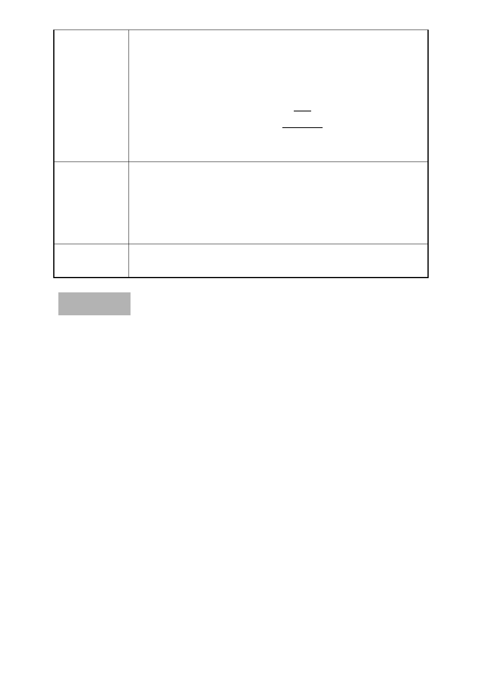

鑑價公司做市場調查其價值損失核算容積補償，當時
核算後之容積補償數量遠高於目前公展之補償數量，
地主將蒙受巨大之損失，本案仍請按原提送資料給予
對價容積補償如下：
（一）增設停車容積損失，補償900平方公尺。
（二）壹樓店面損失補償容積1000.47平方公尺。
二、補償容積計算式，詳後附件：「權益損失折算容積補償
分析說明」。
修正後細部計畫書中所提擬之對價容積補償部分，請市府
專案小組審
查意見
採僅羅列補償項目與原則之方式進行文字重整歸納與修
正，並載註本案對價容積補償併古蹟修護再利用費用折算
容積獎勵之總量以 3200 平方公尺為上限，各項目之對價容
積應由業務單位依原則檢核計算。
委員會決議 同專案小組審查意見
臨時提案 二
案名：為「變更臺北市內湖區文德段四小段 16 地號等 47 筆土地
第三種商業區、道路用地、廣場用地為第三種商業區（特）、
道路用地、公園用地暨劃定為都市更新地區細部計畫案」
涉及更新地區劃定範圍相關事宜，報請 公鑒。
案情概要說明：
一、本案係市府受理立偕建設股份有限公司申請「促進都市再生
2010 年臺北好好看」之開發計畫（老舊社區類），經市府審
查同意推薦，依都市計畫法第 27 條第 1 項第 4 款及都市更新
條例第 6、8 條提出細部計畫變更案。
二、案經本會 98 年 8 月 13 日及 98 年 11 月 12 日專案小組審查，
經提本會 99 年 1 月 27 日第 607 次委員會議審查通過，會議
決議並經本會 99 年 2 月 25 日第 608 次委員會議宣讀確認，
本會並於 99 年 3 月 8 日北市畫會一字第 09930172300 號函
送審議決議予市府在案。
三、本會第 607 次會議決議有關本案更新範圍及都市計畫變更時
程部分（略以）：「 本案修正劃定更新地區範圍，應包括東側
- 34 -